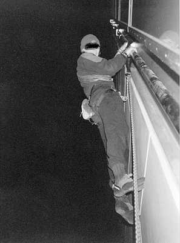
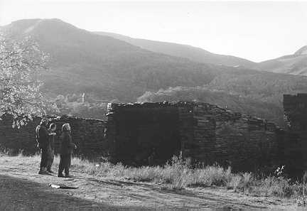

Unknown on the Law Faculty, Sidgewick Site
Photo: Unknown
I think the world's first architect was a climber. Otherwise, why on earth would they make such fine specimens as Kings Chapel, the University Library or St. ???? Church? Beautiful to look at...and beautiful to climb...
But I'm one of these geographer types who has to grapple with the likes of postmodernity, landscapes of exclusion and the restructuring of power. Life in Cambridge's traditional haunts takes place 24hrs a day now. To scale one of these traditional masterpieces requires more than just invincibility, but invisibility. They haven't made it easier either. As far as I can see, modifications to Kings Chapel mean that it might now yield only to a 'mixed' approach - Yes, torque those axes behind the drainpipe and scratch delicately up the masonry - that's my solution!
However, there's a new kid on the block. That often forgotten Sidgewick Site has recently acquired itself "a bit of a white elephant" (VARSITY, Lent 1997). LET NOT A BAD WORD BE SAID AGAINST IT for it is, in my view, the greatest unsung secret of the university. Go have a look for yourselves, its an architectural masterpiece - soaring aretes, huge, well protected roofs, corners that would put Cenotaph Corner to shame, blank walls which look like they've been lifted straight from Yosemite and...a lovely little number down on the East Face. I heard a story, not that long ago, about that very spot.
Once upon a time...
There was a good route up this East Face of the (Sir) Norman Foster Law Faculty. Perfect in all respects - purity of line, sustained, adequate gear (but its below you for the crux!), a decent length and then the crux itself, right at the very top. Apparently it goes at about E1 5b. The abseil off is long - double ropes avoided much potential embarrassment, so they say! It had had one ascent before it claimed its first victims, or more(?), but one tragic night around Halloween, the ghosts of Sir Norman smiled not. Mid crux, was when the lights of the patrol vehicle swung into view and suddenly time stood still...........
.......... "What the.....!!?" exclaimed one security official. Bless him, the poor guy probably nearly had a coronary. Our boys on the ground (or 60ft up, in the case of one!) were just as nervous, "Hi there."
They were snared - "In flagrante delicto" the resulting tribunal exclaimed! Even though the torchbearers were overjoyed to find that no burglary was in progress they were none too enthusiastic about having to witness these final crux moves. Attempts had been made to wean them round - a Fruit Pastile or a stick of Wrigley's were all that were available to the belayer but even when he threw in the offer of a go themselves, our guards remained unmoved (although, undeniably tempted!). Alas, it was not to be and our boys faced that most revered of choices - the retreat.
Arriving back on terra firma all was not well. Walkie-talkies were crackling with more activity than Operation Desert Storm. Security, central security, night porters, head porters - all managed to get a taste of the action in the space of about an hour. Bed was to arrive only after the pair had reported to their respective colleges which led to the most ironic events of the evening. One was accosted for drunken behaviour (not a drop had been drunk all evening!) but, funniest of all - by this time the colleges had shut up shop for the night and so reporting in required .html couple of quick sorties over the perimeter walls!
Postscript - they lived to tell the tale, our two - but only just. Such adventures can no longer be recommended to secure tenure at ones college. All of those classics now go at least two grades harder. However, the adrenaline will flow like it's never flowed before - believe me, I know...

Llanberis quarry huts
Photo: Jasmine Minbashian